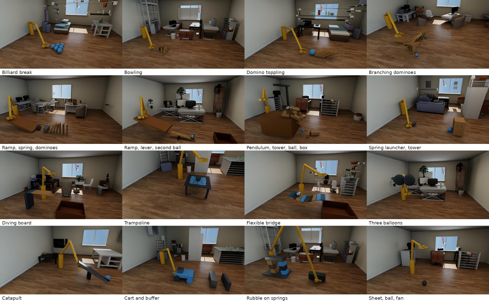
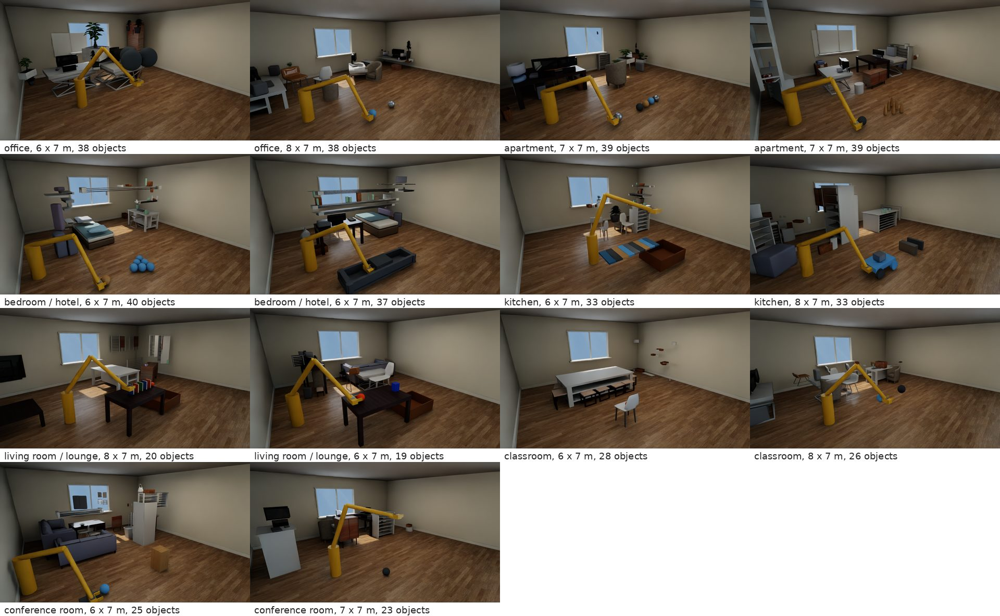

Forty-six indoor mechanics families in scanned rooms, each simulated as a bundle of counterfactuals, interventions and a control, with timed events and measured questions.
What does a world model need in its training data to learn causes, and not only motion?
The first dataset (the Dataset tab) taught the model to continue motion: one action, one rollout, three seconds. It rarely showed the same world twice with one thing changed, and never showed an action arriving in the middle of a rollout. Dataset V2 is built around those two gaps. Every root scene is simulated as up to eight branches from one manifest: the factual run, three counterfactual worlds (a property, a material, a shape), the removal of a causal link, two timed interventions after an observed prefix, and an unchanged replay. Every branch carries contact events with their impulses, frame tags, physics screens and questions whose answers are measured from the saved states. The motion families were widened to cover the mechanisms published physics datasets list, placed in whole scanned rooms, and driven by a visible actuator wherever one is physically sensible.
The audit of the first dataset (25 October) counted 1,367 paired scenes and 490,679 stored rollouts, all 3 s at 30 Hz, in procedural rooms. Only about 2.5 percent of its training action rows have a counterfactual sibling, and none has an intervention after an observed prefix. A model trained on it sees many motions but almost never the evidence that separates "what happens" from "what would have happened if". The published datasets have the same shape: breadth or scale on one axis, no branches from one world.
| Set | What it gives | What it lacks for a causal world model |
|---|---|---|
| Our first dataset (Dataset tab) | 490,679 rollouts, Physion and MOVi conversions, procedural indoor rooms, one action token per clip | Branches from one world (2.5 percent), interventions mid-rollout, events with evidence, realistic rooms |
| PhysInOne | 153,810 dynamic scenes, 71 phenomena (also optics and magnetism), 528 backgrounds, 13 views each | No counterfactual pairs or timed interventions; videos, not replayable states; views are not new physics |
| Sim2Reason | A simulator grades a reasoner's answers to physics questions (about 6,400 QA pairs per RL run) | QA only, no trajectory corpus; the simulator is a grader, not the thing being learned |
| Mundo | Box proxies for every object, MuJoCo moves them, a learned renderer draws the result (about 40,000 pairs) | Physics stays in the engine; nothing about branches or explanations |
| Physion, MOVi | 8 scenario types at 5 to 10 s; random tosses at 2 s | No actions, no branches, no rooms |
| OneWorld (method, not data) | Different actions in one world should share the same latent mass and friction | Needs data that shows one world under several actions, which is what the bundle supplies |
A root is one manifest: the room, the objects with mass, friction, restitution, colliders and materials, the joints and springs, the fields (gravity, drag, wind, buoyancy, thrust) and the actuator's force program. The eight branches are fresh PhysX runs from edited copies of that manifest; nothing is spliced, teleported or driven to a wanted outcome. Each branch exists for a reason and comes with the check that proves it did what it claims.
The registry has six groups. Collisions and motion (13 families) and mechanisms (13) cover the single-stage mechanics of Physion, MOVi and the mechanical half of PhysInOne's phenomenon list: drops that bounce, billiard breaks, bowling, ramps, slipping to rolling, spinning tops, pendulums (simple, double, rigid rod), springs, pulleys, levers, cranks, catapults, carts. Chain reactions (13) are the new emphasis: multi-stage causal chains such as ramp to spring bumper to dominoes, a spring launcher into a tower, a pendulum that fells a tower whose blocks push a ball into a box, a seesaw that launches a second ball, branching domino networks. Flexible solids (3: trampoline net, diving board on hinges with angular springs, flexible bridge) are coarse elastic assemblies that prepare the format for real deformables. Fields and air (5) add buoyant balloons, a falling sheet with drag and a fan, thrust, changed gravity and an orbit.

| Group | Families (horizon in s; actuator: piston, grasp or declared) |
|---|---|
| Collisions and motion (13) | drop, bouncing rubber ball (4, grasp); ball collisions (4, piston); billiard break (6, piston); bowling (5, piston); granular solids (6, grasp); rolling tires collide (5, declared); projectile (5, declared); ramp (5, grasp); pushed sliding block (4, piston); slipping to rolling (5, grasp); spinning blocks (4, grasp); spinning top (8, declared) |
| Mechanisms (13) | cart into a spring buffer (6, piston); spring catapult with trigger pin (5, piston); coupled springs (8, grasp); crank (6, grasp); double pendulum (8, declared); guided slider (4, piston); lever flipping a ball (5, piston); simple pendulum (8, grasp); pendulum into a spring-mounted block (8, grasp); pulley (6, declared); hanging chain (8, grasp); rotating beam (6, grasp); hanging spring (8, grasp) |
| Chain reactions (13) | ball and block fall into a box (5, piston); books knock a ball into a box (5, piston); collision chain (5, piston); chair topples and drops a ball (5, declared); ball to ball to box (5, grasp); branching dominoes (6, piston); spring launcher knocks a tower (6, grasp); pendulum strikes a stack (6, declared); pendulum, tower, ball, box (7, grasp); ramp, lever, second ball (6, grasp); ramp, spring bumper, dominoes (6, grasp); rubble onto a spring platform (4, grasp); domino toppling (5, piston) |
| Flexible solids (3) | diving board flicks a ball into a box (6, grasp); ball strikes a flexible bridge (6, grasp); ball on a trampoline net (5, grasp) |
| Fields and air (5) | three tethered balloons (6, grasp); sheet falls onto a ball, fan later (6, grasp); changing gravity (6, grasp); orbital motion (8, grasp); thrust-driven motion (6, grasp) |
Five earlier families were merged into these because they duplicated physics: a single rolling wheel into the tire collision, a dropped ball into a box into the table-edge chain, pendulum into dominoes into pendulum into a stack, ramp into dominoes into the ramp, spring and domino chain, and a piston poke into the pushed block. The dashboard credits the merged family in each case. Nine others were redefined so that something happens after the action (the cart now meets a buffer, the catapult is cocked and released by a pin, the lever is a real lever, the billiard break has a six-ball rack, the drop bounces, three balloons instead of one, the sheet lands on a ball, the rubble collapses onto springs, the bridge ball rolls off into a box).
The factual branch of every family from the review page, one clip each (interior camera, the whole horizon at 30 frames per second, 640 px). The clips play on hover or click; each group is folded. The yellow arm is the actuator's visual, the grey block its tool. Two clips predate fix8 and will be replaced once its renders are done: the pendulum, tower, ball and box chain is shown without its floor box, and the launcher with the old hold.
Falling and bouncing · 4 s · gripper
Ball collisions · 4 s · piston push
Bowling · 5 s · piston push
Billiard break · 6 s · piston push
Pushed sliding block · 4 s · piston push
Rolling down a ramp · 5 s · gripper
Spinning blocks · 4 s · gripper
Slipping to rolling · 5 s · gripper
Spinning tops · 8 s · declared: a 40 rad/s spin cannot be given by the pilot gripper
Rolling wheels and tires collide · 5 s · declared: two rolling tires launched toward each other
Granular solids · 6 s · gripper
Projectile flight · 5 s · declared: launched at a declared velocity (v11)
Collision chains · 5 s · piston push
Domino toppling · 5 s · piston push
Ball-to-ball-to-box interactions · 5 s · gripper
Rubble on a spring platform · 4 s · gripper
Pendulum strikes a stack · 6 s · declared: rigid-rod pendulum released from rest (v13)
Books knock a ball into a floor box · 5 s · piston push
Falling into a container: ball and block fall from a table · 5 s · piston push
Chair topples and drops a ball · 5 s · declared: the chair collider is a convex hull of a scanned mesh; a push force cannot be set a priori
Ramp, spring bumper and dominoes · 6 s · gripper
Spring launcher knocks a tower down · 6 s · gripper
Pendulum, tower, ball and box · 7 s · gripper
Ramp ball flips a lever that launches a second ball · 6 s · gripper
Branching domino network · 6 s · piston push
Simple pendulums · 8 s · gripper
Double pendulums · 8 s · declared: the lower bob swings from a declared velocity
Hanging springs · 8 s · gripper
Coupled springs · 8 s · gripper
Pulleys · 6 s · declared: the guided loads start from rest; the articulated cable has no free face to grasp
Levers · 5 s · piston push
Guided sliders · 4 s · piston push
Rotating beams · 6 s · gripper
Carts carrying objects · 6 s · piston push
Catapults · 5 s · piston push
Crank mechanisms · 6 s · gripper
Hanging chains · 8 s · gripper
Pendulum strikes a spring-mounted block · 8 s · gripper
Changing gravity · 6 s · gripper
Orbital motion · 8 s · gripper
Thrust-driven motion · 6 s · gripper
Air drag: a sheet falls onto a ball · 6 s · gripper
Buoyancy: three balloons · 6 s · gripper
Ball strikes a flexible bridge · 6 s · gripper
Ball on a trampoline net · 5 s · gripper
Flexible diving board flicks a ball into a box · 6 s · gripper
Most round-2 objects are spheres and boxes (books, dominoes and tower blocks are boxes; pins and pegs are cylinders), and the shape counterfactual swapped between those. The stage exporter already simulates convex hulls, capsules and cylinders exactly, so on 30 October thirteen equal-volume shapes were added to the swap vocabulary, each with a motion of its own: a cone (tips on a nudge, rolls in a circle on its side), a lying capsule (rolls across one axis only), a puck (slides, almost never rolls), a wedge (slides on its flat face, tips over its edge), hexagonal and triangular prisms (roll in jerks), a pyramid, an L block (off-centre mass, asymmetric toppling), a dumbbell (rolls about one axis, rocks about the other), a standing ring (rolls and wobbles, can trap a ball), a bottle (tips, rolls when down), a mug and a bowl (hollow vessels of 13 to 16 convex parts that can catch a small ball). The scaled run draws the actor's shape from this pool in a share of the roots, and a root whose actor is a vocabulary shape gets the family's plain shape as its counterfactual. The one-GPU pilot now queued is their first simulation; the co-author's sixty procedural assets (mugs, bottles, traffic cones, bowling pins, skittles) can enter the same slot once their part lists are scaled to the slot's volume.
Thirty-nine of the 46 families are set in motion by a visible tool: a piston that pushes, or a gripper that holds an object and releases it, with a force program (start, stop, release time, force or torque). What the engine simulates is the tool alone, a single rigid box with a known force schedule; the yellow arm in the renders is drawn, not simulated, and the tool is held kinematically after release. The seven remaining families (top, two tires, pulley loads, rigid-rod pendulum, double pendulum, projectile, scanned chair) start from a declared launch and say so on their card.
Every engine run stores, besides the 120 Hz states, the contact episodes with their impulses at solver resolution (which pair, first contact, peak impulse and where), and a timed event list: comes to rest, topples, container entry and exit, intervention and release markers, gravity and fan changes, rebound and spring compression peaks. The same run passes the physics screens (penetration at most 5 mm, energy gain bounded by the recorded external work, inside the room, unit quaternions) and the family's expectation: the actor moves, the declared pairs touch, the stated stages touch in order, the tower tips, the ball ends inside the box. The branch checks of section 2 run on top. A failed check stays in the record as a valid negative and is shown on the dashboard, never silently dropped.
Each family declares which question kinds apply: count and order of toppled objects, first tip time, ends inside, rebound height, bounce count, travel distance, greatest height, time to rest, spring compression, oscillation count, maximum rotation, contact order, direction after impact, spread, plus mass, energy, speed and contact time. The answer to each is measured from the saved states and contact reports of that run and shown with its evidence frames. The factual record also carries comparative questions across the bundle ("if the material were rubber, does the ball travel more, less or about the same?"), answered from the two saved runs. Qwen (a 27B checkpoint, run locally) is used for wording only: it rewords measured questions in natural language and may propose a typed question whose answer the simulator then measures. On the round-2 scenes it returned 83 valid rewordings and 26 proposals, 25 of a valid type; nothing numerical ever comes from the language model.
Each family runs in one of fourteen whole ScanNet++ training rooms, two per type (office, apartment, bedroom, kitchen, living room, classroom, conference room). The scanned layout is transferred rigidly behind a reserved foreground zone; furniture is fitted with ReplicaCAD assets, small items are seated on the furniture below them, whiteboards and screens hang on the nearest wall, and anything that would enter the zone or leave the shell is dropped. The rooms keep 19 to 40 objects each, all with static colliders. The camera stays inside the room, below the ceiling, and walks forward to the closest distance that frames the recorded motion.

Horizons are set per family from measured time to rest and last task event over every branch: 4 s for drops, sliding and spinning, 5 to 6 s for most, 7 s for the pendulum, tower and box chain, 8 s for pendulums, springs, chains and orbits. Nothing runs longer than 8 s, and no branch has an event after its horizon. The solver steps at 1920 Hz and states are saved at 120 Hz: subsampling the same runs to 30 Hz moved the stored position up to 7.5 cm around impacts in 14 families, 60 Hz up to 3.1 cm.
| Check | Result |
|---|---|
| Physics screens (penetration, energy, bounds, quaternions) | 341 of 342 round-2 runs; 16 of 16 fix8 runs |
| Family expectation and motion checks | 46 of 46 families (44 on the round-2 roots, the last two on the fix8 roots) |
| Control replays exactly; intervention prefixes identical | 46 of 46 |
| Chains with every stage touching in order | 19 of 19 |
| Randomized variants, geometry pre-flight | 46 families x 20 seeds, all accepted |
| Randomized variants, simulated (6 families x 3 seeds) | 18 of 18 pass the physics screens; 13 of 18 also reach the family's expected outcome (see below) |
Every family has a base recipe whose motion is verified (the 44 above). A variant keeps the recipe and re-draws: the room (one of the 14 scanned layouts), the main object's mass (0.6 to 1.6 times), the actuator force or the declared launch speed (0.8 to 1.25 times), the materials of about half of the dynamic objects (friction, restitution, appearance), a pose jitter of a free-standing actor (up to 4 cm by 3 cm) and, in 30% of the draws, the actor's shape. Every draw passes the same overlap pre-flight as the hand-placed example (all 920 did; the scaled runner's dry run of 138 roots with 3 actions each, 2,710 manifests, built and cleared the pre-flight as well). After simulation, all 18 variant runs passed the physics screens; in five the expected outcome did not occur: a lighter push left the collision target in place, a draw of the ramp, spring and dominoes did not topple the row, two topple draws did not tip the block, a balloon draw did not touch its target. These are outcomes, not failures: the production run keeps such records with the measured outcome as the label (`expectation_met: false`), which is exactly the variation the randomization is meant to bring.
| Item | Decision |
|---|---|
| Action programs per root | 3: the root's own, then two re-draws of the total drive (0.7 to 1.4 times the recipe, at least 0.1 away from the root's), with the push point of a piston shifted across the payload face by up to a quarter of its half width (off-centre pushes spin the payload) and a throw or launch yawed by up to 8 degrees |
| Branches per action | every applicable branch (6 or 7): factual, property, material and shape counterfactuals, removal, tool intervention, late intervention; the exact replay control on the first action of every tenth root |
| Records per root | about 20 (3 x 6.4 plus the occasional control) |
| Shapes | the actor drawn from the vocabulary of 3c in a share of the roots; a vocabulary root gets the family's plain shape as its counterfactual |
| What is kept | scene, physics stage, 120 Hz states, contact episodes, events with frame tags, measured questions, per-action comparative questions, labels; about 1.5 MB per record. The render stage is built in scratch and deleted; nothing is rendered, review clips come later from chosen subsets |
| Questions | the deterministic measured questions are written with every record; the Qwen wording pass (rewrites and typed proposals, answers always measured) runs afterwards on finished shards as its own GPU job, first on a sample |
| Labels | the family's expectation and stage order are measured from the saved states after every action and stored, never used to reject; only the physics screens are pass/fail per record |
| Jobs | Slurm array over shards, several Isaac processes per L40S (the stepping loop is Python-bound, the GPU mostly idle); resumable per root |
Measured on the 605 round-2 engine runs: median 50 s, mean 98.5 s, 90th percentile 230 s of PhysX stepping per run, plus 2 to 5 s of stage export and start-up. At 102 s per record and one process per L40S:
| Records | Roots (per family) | GPU-hours | Wall on 16 L40S | Storage |
|---|---|---|---|---|
| 10,000 | 500 (11) | 280 | 18 h | 15 GB |
| 100,000 | 5,000 (110) | 2,800 | 7.4 days | 150 GB |
| 200,000 | 10,000 (220) | 5,700 | 15 days | 300 GB |
The earlier figures on this page (0.23 GPU-hours per 25-record root) used the median and are the optimistic bound; the one-GPU pilot measures how far three processes per GPU divide the numbers above. A million records is out of reach before the deadline; 10,000 is a day, 100,000 about a week of the whole 16-GPU allowance, 200,000 two weeks.
Sources: the round-2 design and results in the simagent checkout (docs/MECHANICS_FAMILIES_V2.md sections 9 to 11, docs/COMPOSITE_DATA_PLAN.md, docs/PHYSICS_DATA_PLAN.md), the per-family receipts under the mechanics data root, and the mechanics review dashboard (cluster-internal). Every number above comes from a receipt; the scale figures are estimates by the unitary method from the measured runs and exclude the long tail.